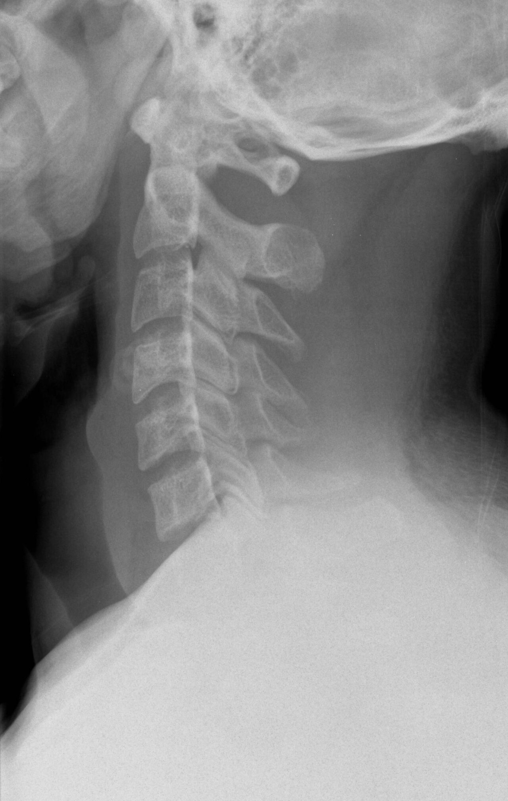

Ficha del catálogo
Radiografía lateral de columna cervical
- Sistema
- Óseo
- Modalidad
- RX
- Región
- Columna
- Dificultad
- Avanzado
Proyección esencial en el traumatismo cervical, donde una lesión no detectada puede tener consecuencias neurológicas graves. Su lectura sigue un método sistemático de líneas y espacios que conviene aplicar siempre en el mismo orden.
Técnica
Paciente en decúbito supino con inmovilización cervical, hombros traccionados hacia abajo. El estudio debe visualizar desde la base del cráneo hasta la unión entre C7 y T1: Si no se ve C7, el estudio es insuficiente.
Qué observar
- Línea vertebral anterior: Une los bordes anteriores de los cuerpos vertebrales en una curva suave
- Línea vertebral posterior: Une los bordes posteriores (su interrupción indica desplazamiento hacia el canal)
- Línea espinolaminar: Marca el límite posterior del canal medular
- Línea de las apófisis espinosas y separación entre ellas, que debe ser uniforme
- Espacio predental (entre el arco anterior del atlas y la odontoides): Hasta 3 mm en adultos, hasta 5 mm en niños
- Partes blandas prevertebrales: Su engrosamiento sugiere hematoma por lesión ósea o ligamentaria
Hallazgos
Columna cervical con lordosis conservada, alineación normal de las cuatro líneas de referencia, alturas vertebrales y espacios discales preservados.
Perlas
La causa más frecuente de error en columna cervical es no visualizar la unión C7-T1, donde se concentran muchas lesiones. Si no se logra ver con la proyección lateral, corresponde una proyección del nadador o directamente una tomografía.
Diagnóstico diferencial
- Fractura de odontoides
- Se busca una interrupción en la base o el cuerpo de la apófisis odontoides, a veces con desplazamiento anterior o posterior del fragmento respecto al cuerpo de C2.
- Luxación facetaria
- Aparece un desplazamiento anterior del cuerpo vertebral con aumento de la distancia interespinosa y pérdida de la superposición normal de las facetas.
- Fractura por estallido del cuerpo vertebral
- El cuerpo pierde altura de forma global con retropulsión de un fragmento hacia el canal, lo que interrumpe la línea vertebral posterior.
- Espondilosis cervical
- Hay pinzamiento discal, osteofitos y esclerosis de platillos con alineación conservada y sin engrosamiento de partes blandas prevertebrales.
- Inestabilidad ligamentaria sin fractura
- Las líneas de alineación están alteradas y las partes blandas prevertebrales engrosadas pese a que no se identifica trazo óseo, lo que obliga a completar el estudio.
- Absceso o infección prevertebral
- El engrosamiento de partes blandas es progresivo y se acompaña de destrucción de platillos y pérdida del espacio discal, en un cuadro clínico no traumático.
Simuladores
- La seudosubluxación fisiológica de C2 sobre C3 en el niño es un desplazamiento anterior de hasta unos milímetros que se corrige al aplicar la línea espinolaminar, la cual permanece alineada.
- El llanto o la espiración en el niño ensanchan aparentemente las partes blandas prevertebrales (conviene valorarlas en inspiración).
- Los centros de osificación de la odontoides y la sincondrosis subdental en el niño simulan trazos, pero tienen bordes esclerosos y regulares.
- La superposición de los hombros oscurece la unión C7-T1 y hace parecer normal un segmento que simplemente no se ha visto.
Por modalidad
- RX
- Sigue siendo un estudio de aproximación rápida y de control de alineación, y las proyecciones dinámicas valoran inestabilidad en pacientes seleccionados.
- TC
- Es hoy la técnica de elección en el traumatismo cervical porque detecta fracturas que la radiografía no muestra y cubre toda la columna cervical.
- RM
- Insustituible para la médula espinal, los discos, los ligamentos y el hematoma epidural, y obligada ante déficit neurológico.
- US
- Sin papel en la valoración ósea cervical, aunque puede orientar en lesiones vasculares del cuello y en colecciones superficiales.
Protocolo
Con el paciente en decúbito supino y collarín cervical colocado, se obtiene una proyección lateral con haz horizontal traccionando suavemente los hombros hacia abajo para descender la cintura escapular, con distancia foco-receptor amplia para reducir la magnificación. El estudio debe abarcar desde la base del cráneo hasta la unión C7-T1; si no se logra, se recurre a la proyección del nadador o directamente a la tomografía. La serie completa incluye además una anteroposterior y una transoral para la odontoides. Las proyecciones dinámicas en flexión y extensión solo se realizan en pacientes conscientes, colaboradores y sin déficit.
Clasificación
La clasificación de Anderson y D'Alonzo divide las fracturas de odontoides en tres tipos según el nivel del trazo: Por la punta, por la base del cuello de la odontoides, que es la más frecuente y la de peor consolidación, y con extensión al cuerpo de C2. Para la columna cervical subaxial se emplea la escala SLIC, que suma puntos por la morfología de la lesión, la integridad del complejo ligamentario discoligamentario y el estado neurológico, orientando la decisión quirúrgica. Los criterios clínicos NEXUS y la regla canadiense determinan qué pacientes requieren estudio de imagen.
Errores frecuentes
- Dar por válido un estudio que no visualiza la unión C7-T1, error clásico y responsable de lesiones no detectadas.
- Buscar solo trazos óseos y no aplicar de forma sistemática las cuatro líneas de alineación y la medida del espacio predental.
- Ignorar el engrosamiento de partes blandas prevertebrales, que puede ser el único signo de una lesión importante.
- Detenerse tras encontrar una lesión sin seguir revisando el resto de la columna, ya que las lesiones a varios niveles no son raras.

cervical columna trauma lineas odontoides lordosis urgencias